Route every purchase order through a multi-level, amount-based approval matrix: the right people approve, in the right order, with a complete audit trail. Once released, the order is confirmed automatically or handed back to the buyer, and any change to a locked field sends it back for approval.
Standard Odoo offers one approval threshold. Real procurement policies need several levels, named roles and proof of who approved what.
Four steps from RFQ to confirmed purchase order.
Screenshots use a demo company, Gulf Trading Co. (USD), with a buyer (Sara), a Purchase Manager (Omar), a Finance Approvers group (Layla, Khalid), a CFO (Yousef) and three release strategies.
Purchase › Orders › Release Approvals lists the orders waiting for you. Purchase › Configuration › Release Strategies holds the templates (Purchase Administrators). The switch lives in Purchase › Configuration › Settings › Orders.
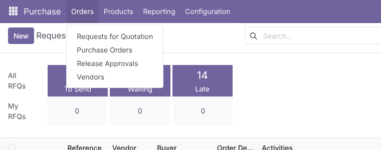
Tick Purchase Release Strategies (company-specific, off by default) and pick a Default Release Strategy. From then on every purchase order of the company needs a strategy before it can be confirmed; the default is filled in automatically on new orders, and the native Purchase Order Approval is no longer used for that company.
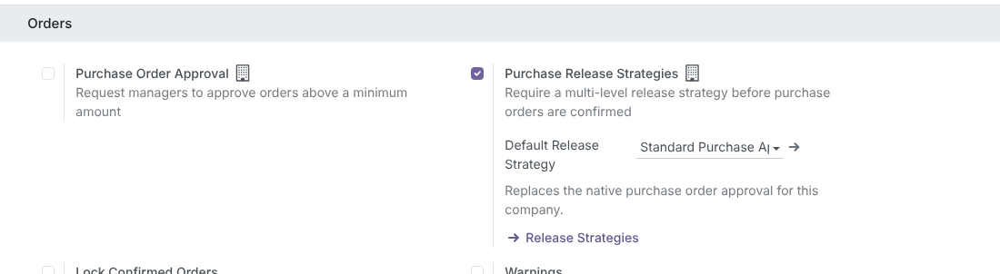
Create as many templates as you need. Each Approval Rule has a Stage, a Role, an Approver Type (Specific User or User Group) and a Minimum Amount / Maximum Amount in company currency. Per template you also choose the Amount Basis (total or untaxed), the Approval Deadline (Days), what happens After Final Approval and how Changes on Confirmed Orders are handled.
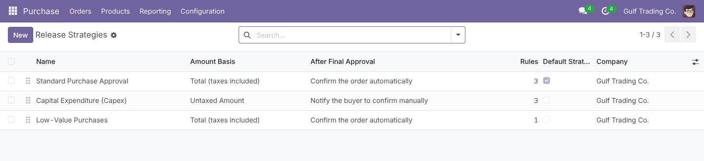
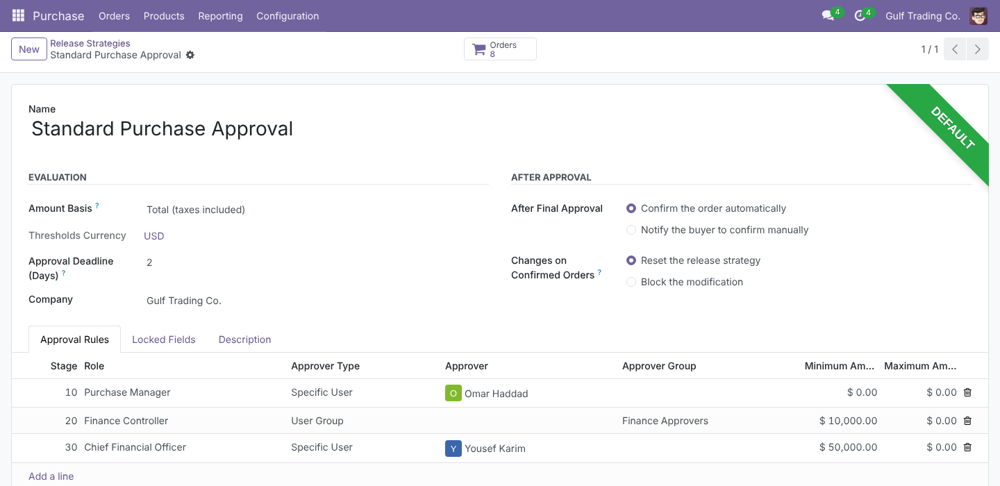
While an order is not released, Confirm Order is replaced by Submit for Approval. Submitting moves the order to To Approve, generates the approval lines for the rules matching the amount, and schedules a Release Approval activity for each approver of the first stage. A banner shows Waiting for release approval by and the approvers concerned; only they see Approve and Reject.
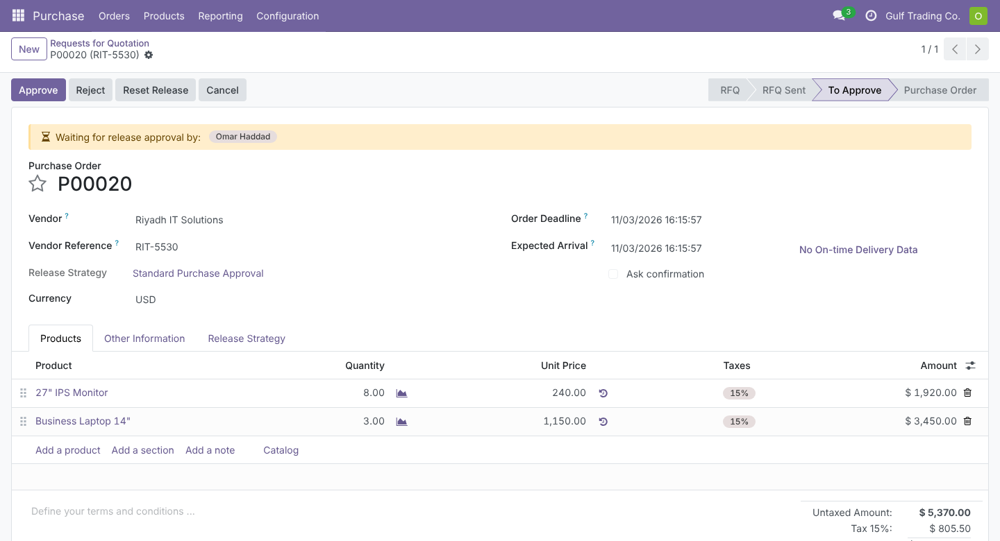
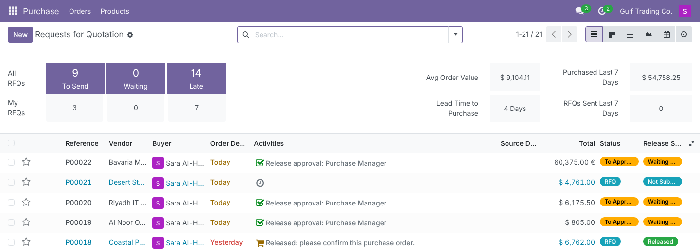
Approve opens a short dialog showing the Release Amount and Your Role(s), with optional notes. Confirming completes the approver’s activity (the notes become its feedback in the chatter), removes the same activity from the other members of a group, and starts the next stage when the current one is complete.
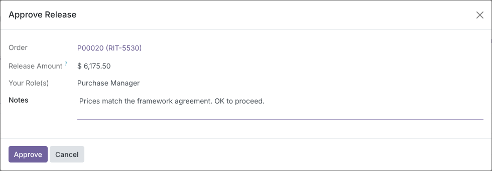
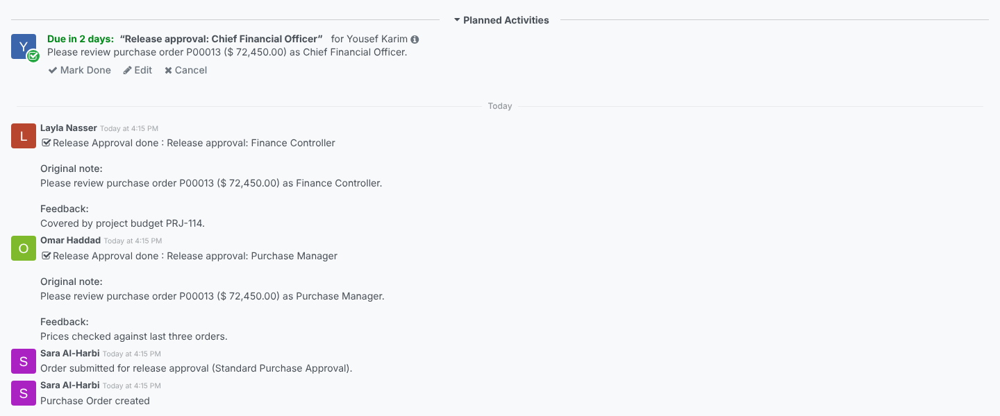
The Release Strategy tab shows the Release Status, the Release Amount in company currency, Submitted On / Released On, and one line per rule with Stage, Role, Approver(s), State, Assigned On, Approved On, Approved By and Approver Notes. Here a $ 72,450 order has passed the manager and finance stages and waits for the CFO.
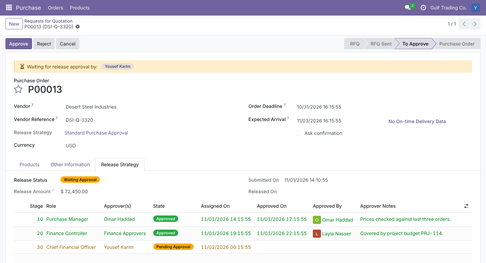
Purchase › Orders › Release Approvals opens with the My Release Approvals filter: every order where you hold a pending release activity, RFQs and confirmed orders alike. The filters Waiting Release, Released, Release Rejected and the groupings Release Status / Release Strategy are also added to the standard purchase searches.
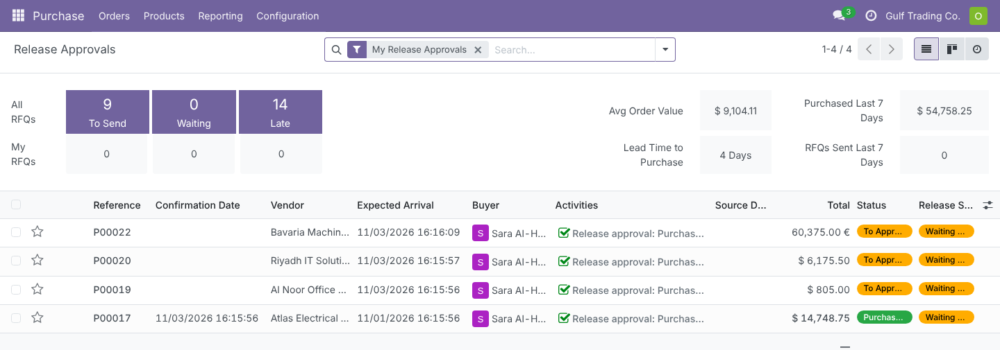
Thresholds are always in the company currency. When an order is in another currency, its amount (total or untaxed, depending on the strategy) is converted with Odoo’s exchange rates at the order date, and the result is stored as the Release Amount. Rules sharing a stage, like Purchase Manager and Finance Controller below, are approved in parallel.
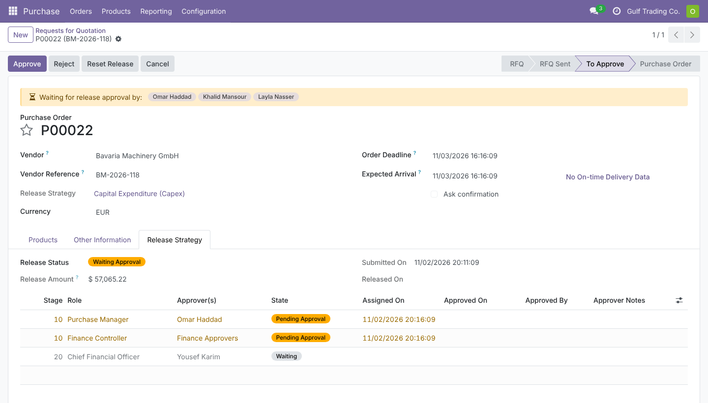
Reject requires a reason. The approver’s line becomes Rejected, the remaining lines Cancelled, the order returns to RFQ and the buyer receives a to-do with the reason. The buyer fixes the order and clicks Submit for Approval again. Reset Release (buyer, Purchase Administrator or Release Supervisor) clears every approval at any time before confirmation.
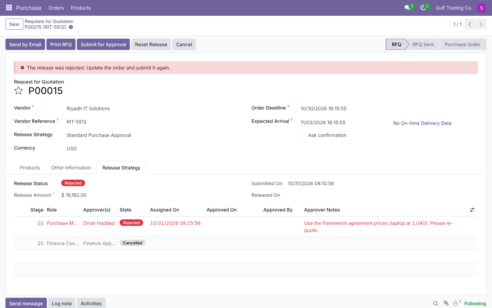
Users with the Release Supervisor right see Bypass Approval. A reason is mandatory; the remaining lines become Bypassed, their activities are removed and the post-approval action runs immediately. The order keeps Approval Bypassed, Bypassed By and Bypass Reason.
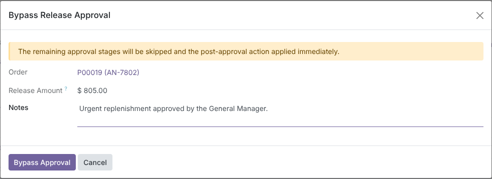
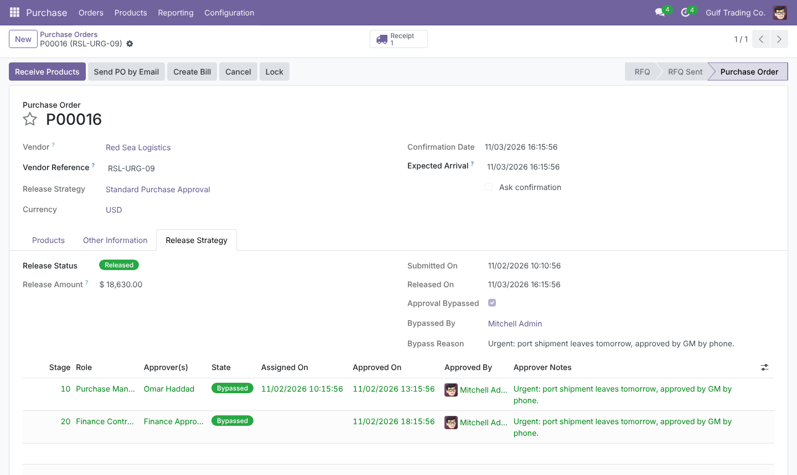
With Confirm the order automatically, the last approval confirms the purchase order and the normal flow continues (receipts with Inventory, bills). With Notify the buyer to confirm manually, the order returns to RFQ marked Released, Confirm Order becomes available and the buyer gets a Confirm Released Order activity, which is closed when the order is confirmed.
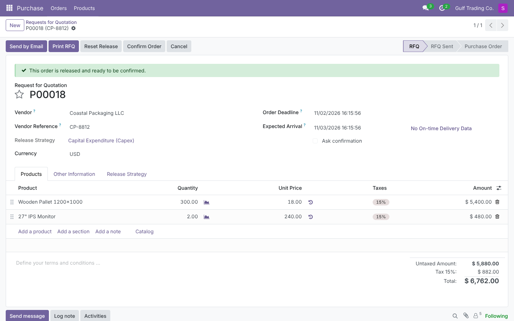
On each strategy, select the purchase order fields to lock (for example Vendor, Order Lines, Total, Currency, Payment Terms). Their values are captured when the order is submitted. If one of them changes while the order is waiting or after release, the strategy is reset, previous approvals are cleared, the approval lines are regenerated, new activities are scheduled and every previous and new approver is notified in the chatter. For orders already confirmed you choose per strategy: Reset the release strategy (the order stays confirmed and a new approval is requested) or Block the modification.
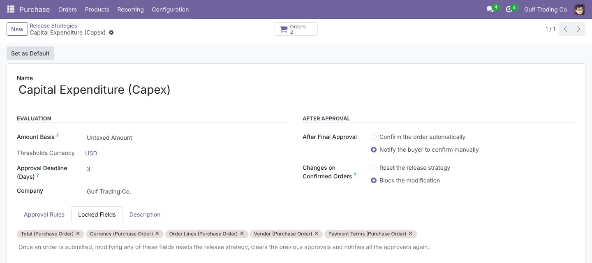
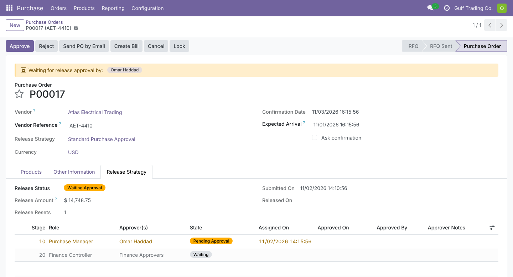
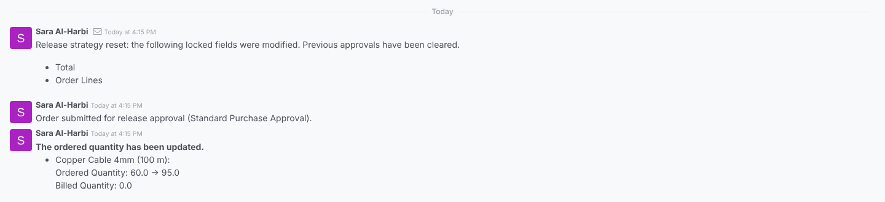
The order carries a Release Status; each approval line has its own state.
Each of these is covered by the automated tests.
Release Supervisor is set in Settings › Users › Access Rights › Inventory › Purchase Release Strategy.
| Who | Can |
|---|---|
| Purchase / User (buyer) | Submit orders, reset the release of their own orders, read strategies and approval logs. |
| Approvers (user or group member of a rule) | Approve or reject only the lines of the current stage assigned to them. Approval lines are written by the module, never edited by hand. |
| Purchase / Administrator | Create and edit release strategies and reset the release of any order. Enabling the setting itself is done by a Settings administrator. |
| Release Supervisor | Bypass approvals (reason required) and reset any release. Implies Purchase / User. |
| Multi-company | Record rules restrict strategies, rules and approval lines to the user’s allowed companies. |
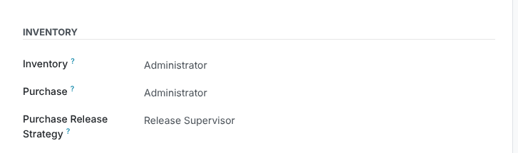
| Odoo version | 18.0, Community and Enterprise |
| Depends on | purchase, mail (works with purchase_stock when installed) |
| Python dependencies | None |
| Menus | Purchase › Orders › Release Approvals; Purchase › Configuration › Release Strategies |
| Settings | Purchase › Configuration › Settings › Orders › Purchase Release Strategies, Default Release Strategy |
| Models | po.release.strategy, po.release.strategy.rule, purchase.order.release.line, wizard po.release.action.wizard; extends purchase.order, purchase.order.line, mail.activity, res.company |
| Activity types | Release Approval, Confirm Released Order |
| Automated tests | 29 tests: settings and defaults, lockable-field detection, single and multi-stage flows, groups and parallel stages, currency conversion and amount basis, reject / reset / bypass, activity protection, cancel and duplicate, notify-buyer mode, locked fields on draft and confirmed orders, receipts with Inventory, forms |
| Translations | Arabic (ar_001), right-to-left ready |
| License | LGPL-3 |
Questions, a demo, or an adaptation to your own approval policy? Get in touch.
✉ ibrahim.yahiah@gmail.com LinkedIn: Ibrahim YahiaAuthor: Ibrahim Yahia · License: LGPL-3